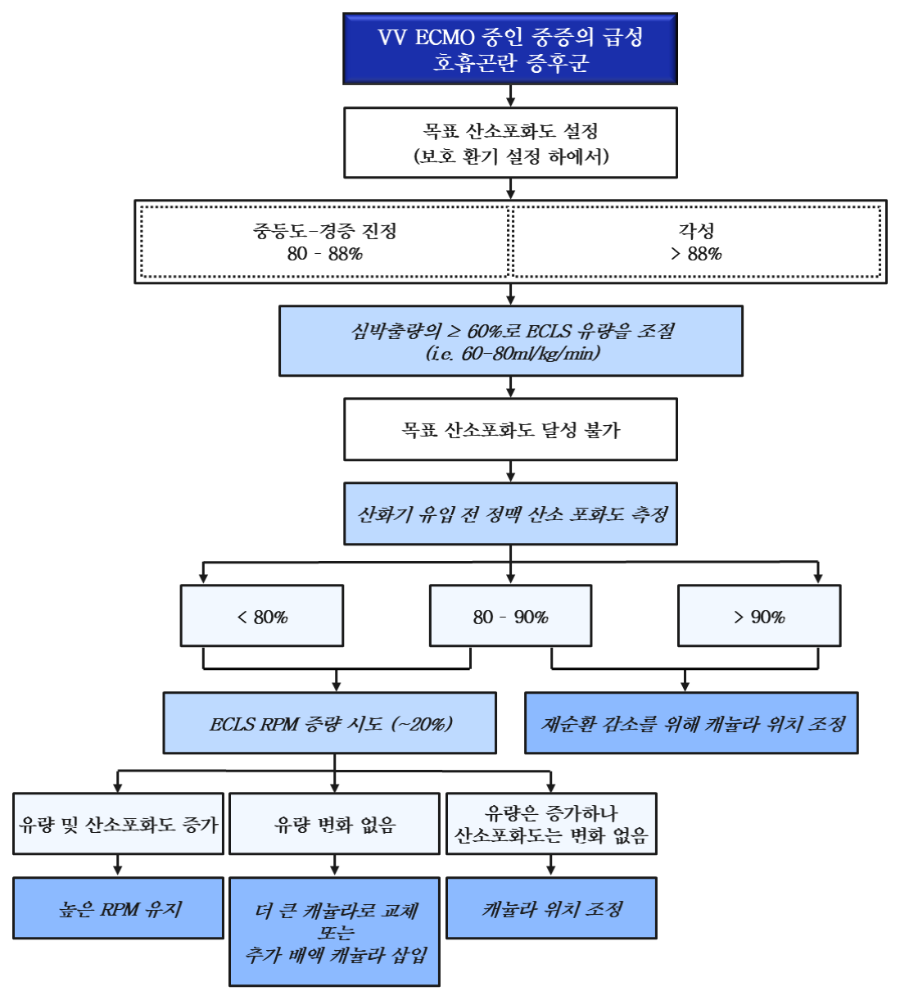
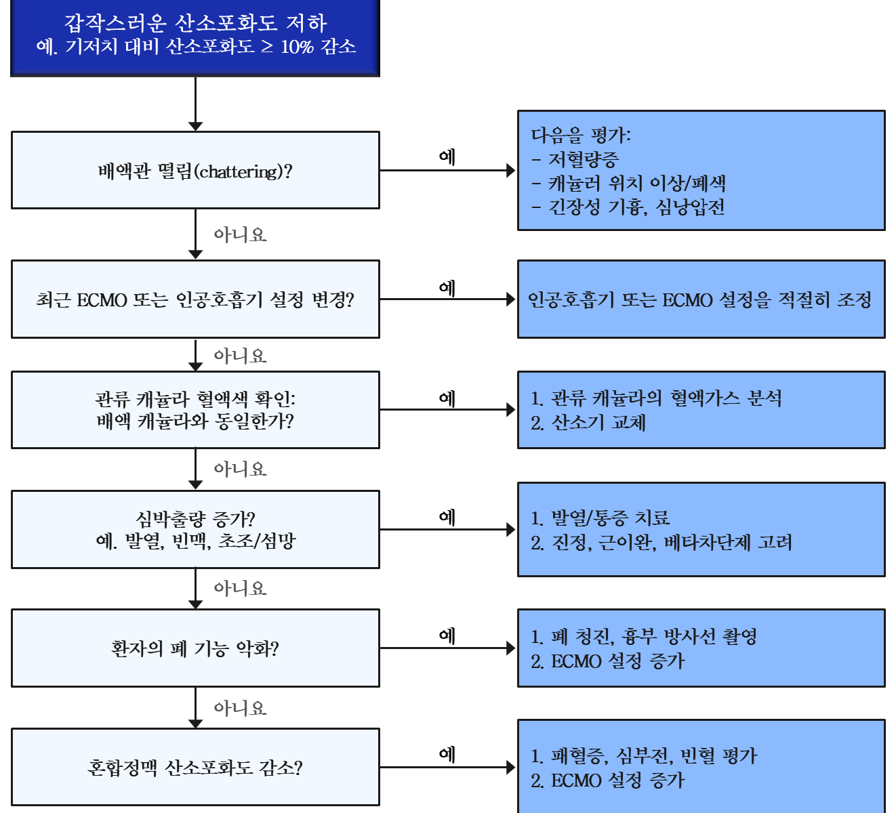
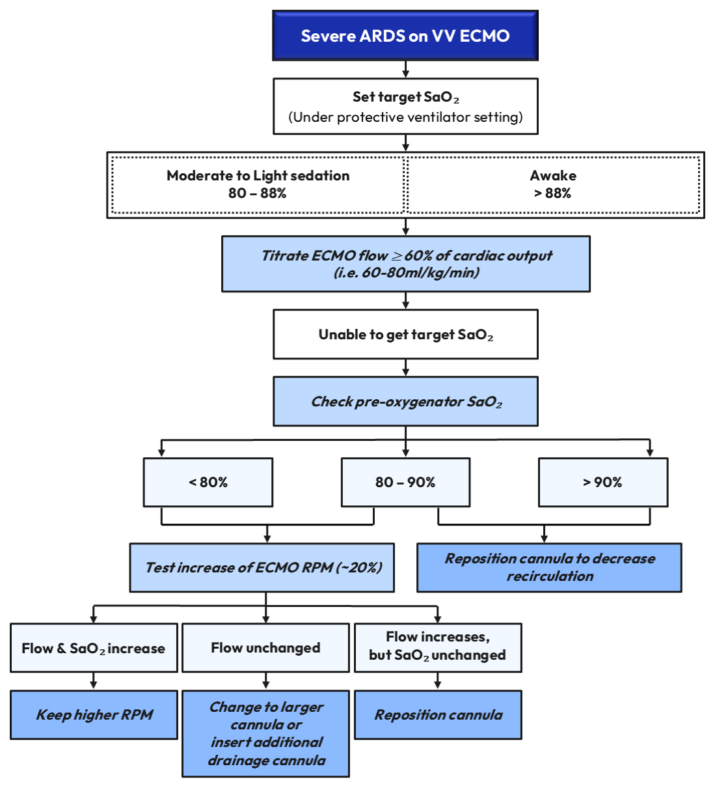
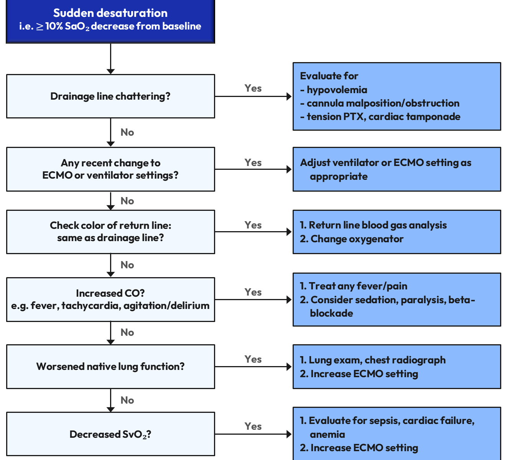

1.저산소혈증 관련 요인
VV ECMO 중 저산소혈증은 다음 범주 중 하나 이상에 의해 발생 가능:
(1)환자 관련 요인
①심박출량 증가
②산소 소비 증가: 발열, 불안, 떨림, 패혈증 등
③폐 기능 악화
④산소 운반 능력 감소: 빈혈, 쇼크 등
(2)서킷 관련 요인
①ECMO 혈류 또는 배액 부족
②재순환
③산화기 기능 이상
④산화기 가스 누출, 연결 분리 또는 산화기 산소 감소
2.VV ECMO 시작 직후 저산소혈증 (초기 단계)
(1)임상적 상황
•VV ECMO 시작 초기에는 전신으로의 충분한 산소 전달을 위한 최적의 ECMO 설정이 아직 완전히 확립되지 않은 경우가 흔함
•ECMO 시작 직후 발생하는 저산소혈증은 주로 다음 두 가지에 의함:
–심박출량 대비 ECMO의 보조 부족
–캐뉼라 위치에 의한 재순환
(2)단계적 접근
①ECMO 혈류의 충분성 평가
•목표 산소포화도 달성 여부를 평가하기 위해 ECMO 혈류를 일시적으로 증량
②산화기 유입 전 정맥 산소포화도 평가
•산화기 유입 전 정맥 산소포화도가 중등도 이상으로 높은 경우
→재순환 가능성을 높게 시사
•산화기 유입 전 정맥 산소포화도가 낮거나 중등도인 경우
→이전 혈류 증가에도 불구하고 심박출량 대비 ECMO 혈류가 여전히 부족하거나, 산소 소비 증가가 동반되었을 가능성을 시사
→반응 평가를 위해 ECMO 혈류를 추가로 더 증가시켜 봄
(3)처치
①ECMO 혈류 부족 및 산소 소비 증가가 의심되는 경우
•환자 관리
–교정 가능한 요인 확인
–산소 요구량 최적화: 충분한 진정, 진통, 체온 조절 등
–임상적으로 필요한 경우 혈색소 농도를 교정
•캐뉼라 관리
–적절한 산소 전달 유지를 위해 높은 ECMO 혈류가 지속적으로 필요하고 배액 캐뉼라 떨림이 동반된 경우, 먼저 저혈량 상태를 배제하고 직경이 더 큰 캐뉼라로 변경 또는 추가 캐뉼라 삽입 고려
②재순환이 의심되는 경우
•정의: 반환 캐뉼라를 통해 환자에게 전달된 산소화된 혈액이 전신 순환을 거치지 않고 다시 배액 캐뉼라로 흡인되는 현상 - 이로 인해 VV ECMO의 실질적 산소 전달이 감소
•연관 요인
–환자 관련: 흉강 내, 심장 내, 복강 내 압력 변화
–서킷 관련: 캐뉼라 크기 및 위치, 펌프 속도 및 ECMO 혈류량
•재순환을 시사하는 소견
–배액 캐뉼라와 반환 캐뉼라의 색이 비슷하게 모두 밝게 보임
–ECMO 혈류 증가에도 동맥 산소화가 개선되지 않으며 오히려 저산소혈증이 악화되기도 함
–환자의 동맥 산소포화도는 감소해 있는 반면, 산화기 유입 전 정맥 산소포화도는 증가되어 있음
–정맥 산소포화도를 이용한 계산
: 재순환율(%) = (SpreO₂ – SvO₂) / (SpostO₂ – SvO₂) × 100
–ELSA 시스템을 이용한 초음파 희석 측정: 일반적으로 재순환율 30–40% 이상은 의미 있는 재순환을 시사
•처치
–배액 캐뉼라와 반환 캐뉼라 사이의 거리가 멀어지도록 캐뉼라 위치 조정
–불필요하게 높은 ECMO 혈류를 자제; 유효 혈류는 가장 낮은 펌프 속도에서 가장 큰 산소 전달을 제공하는 혈류
–높은 ECMO 혈류가 필요한 경우 더 낮은 펌프 속도에서도 충분한 ECMO 혈류를 유지할 수 있도록 추가 배액 캐뉼라 삽입 또는 더 큰 캐뉼라 사용을 고려
–흉강 내 또는 복강 내 압력 변화를 증가시키는 요인들을 최소화
(4)ECMO 시작 후 목표 산소포화도에 도달하지 못할 때의 접근

3.VV ECMO 안정화 이후 저산소혈증 (유지 단계)
(1)임상적 상황
•VV ECMO 초기 안정화 이후 새롭게 발생하는 저산소혈증은 대개 불충분한 ECMO 서포트보다는 새롭게 발생한 문제를 반영
•따라서 환자 또는 ECMO 시스템에서 무엇이 변했는지에 대한 평가가 필요
(2)흔한 원인
•유지 단계에서 발생하는 예상치 못한 저산소혈증은 주로 다음과 연관:
–최근 ECMO 또는 인공호흡기 설정 변경
–배액 캐뉼라로의 배액 부족
–산화기 기능 이상
–심박출량 또는 산소 소비 증가
–폐 기능 악화
(3)단계적 평가
①배액 캐뉼라의 적절성 평가 (II-4-(1). 배액 부족 참고)
②최근 ECMO 및 인공호흡기 설정의 변화 확인
③산화기 기능 평가 (II-4-(4). 산화기 기능 이상 참고)
•산화기 전후 혈류 색 차이 확인
•산화기 후방 가스교환 성능 및 막간 압력차(ΔP) 평가
④환자 관련 요인 평가
•심박출량 증가
•폐 병변 악화
•정맥 산소포화도 감소
(4)안정적으로 유지되던 VV ECMO 중 산소포화도 저하 발생 시 접근 방법

1.Factors associated with hypoxemia
Hypoxemia during VV ECMO may result from one or more of the following categories:
(1)Patient-related factors
①Increased cardiac output
②Increased oxygen consumption: fever, agitation, shivering, sepsis, etc.
③Worsening native lung function
④Reduced oxygen-carrying capacity: anemia, shock, etc.
(2)Circuit-related factors
①Insufficient ECMO blood flow or drainage insufficiency
②Recirculation
③Oxygenator dysfunction
④Gas tubing leak, disconnection, or decreased sweep gas FiO₂
2.Hypoxemia following initiation of VV ECMO (Early phase)
(1)Clinical context
•In the early phase after VV ECMO initiation, optimal ECMO settings to provide adequate systemic oxygen delivery are often not yet fully established
•Hypoxemia shortly after ECMO initiation most commonly reflects:
–Insufficient extracorporeal support relative to cardiac output
–Recirculation due to cannula configuration or positioning
(2)Stepwise approach
①Assess whether ECMO blood flow is sufficient
•Temporarily increase ECMO blood flow to evaluate whether the target SaO₂ can be achieved
②Assess pre-oxygenator venous saturation
•Intermediate to high pre-oxygenator SaO₂
→Suggests a higher likelihood of recirculation
•Low to intermediate pre-oxygenator SaO₂
→Suggests that ECMO blood flow remains insufficient relative to cardiac output despite prior flow escalation, and/or increased VO₂
→Consider further increase in ECMO blood flow to assess response
(3)Management
①If insufficient ECMO support and/or high VO₂ is suspected
•Patient management
–Identify potentially correctable contributors
–Optimize oxygen demand: Adequate sedation, analgesia, temperature control...
–Optimize hemoglobin concentration as clinically indicated
•Cannula management
–If higher ECMO blood flow is persistently required to maintain adequate oxygen delivery and drainage insufficiency is present, exclude hypovolemia first; then consider cannula upsizing or additional cannulation
②If recirculation is suspected
•Recirculation refers to withdrawal of oxygenated blood delivered by the return cannula back into the drainage cannula without passing through the systemic circulation, thereby reducing the effective oxygen delivery of VV ECMO
•Contributing factors:
–Patient: changes in intra-thoracic, intra-cardiac, and intra-abdominal pressures
–Circuit: cannula configuration, size and position, pump speed and ECMO blood flow
•Clues suggesting recirculation
–Similar bright-colored blood in both drainage and return cannulas
–Increasing ECMO blood flow fails to improve arterial oxygenation and may worsen hypoxemia
–Increasing pre-oxygenator venous oxygen saturation with decreasing arterial SaO₂
–Calculation using SvO₂ (in selected cases)
: Recirculation (%) = (SpreO₂ – SvO₂) / (SpostO₂ – SvO₂) × 100
–Ultrasound dilution measurement using the ELSA system: Recirculation ≥ 30–40% is generally considered indicative of significant recirculation
•Management
–Reposition cannulas to increase the distance between drainage and return cannulas
–Avoid unnecessarily high ECMO blood flow; the effective flow is the flow that delivers the greatest oxygen delivery at the lowest pump speed
–If higher ECMO blood flow is required to maintain adequate oxygen delivery, consider insertion of an additional drainage cannula or use of a larger cannula to allow adequate support at lower pump speeds
–Minimize factors that increase intrathoracic or intra-abdominal pressure variation
(4)Approach to failure to achieve a desired SaO2 target post-ECMO initiation

3.Hypoxemia after being stable on VV ECMO (Maintenance phase)
(1)Clinical context
•Unexpected hypoxemia occurring after initial stabilization on VV ECMO usually reflects a newly developed problem, rather than inadequate initial ECMO support
•This situation should prompt a focused evaluation of what has changed in the patient or the ECMO system
(2)Common causes
•Unexpected hypoxemia during the maintenance phase is most commonly associated with:
–Recent decreases or changes in ECMO or ventilator settings
–Drainage insufficiency
–Oxygenator dysfunction
–Increased cardiac output or oxygen consumption
–Worsening native lung function
(3)Stepwise evaluation
①Assess drainage adequacy (Refer II-4-(1). Drainage insufficiency)
②Review recent ECMO and ventilator setting changes
③Assess oxygenator function (Refer II-4-(4). Oxygenator dysfunction)
•Inspect color difference between pre- and post-oxygenator blood
•Evaluate post-oxygenator gas exchange performance and/or trans-membrane pressure gradient (ΔP)
④Assess patient-related contributors
•Increased cardiac output
•Worsening native lung pathology
•Decreased SvO₂
(4)Approach to desaturation after being stable on VV ECMO

이전Previous06. ECMO 중 의학적 관리06. Medical Management During ECMO
다음Next08. ECMO 중 모니터링08. Monitoring During ECMO
목차로 돌아가기Back to Contents